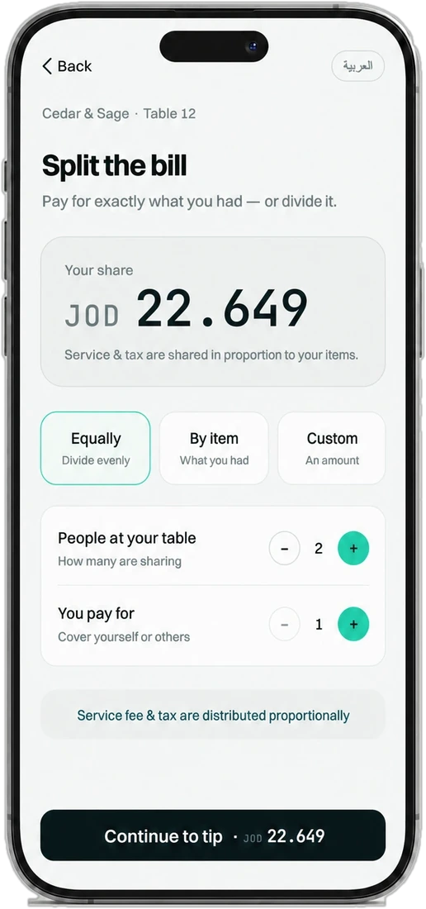
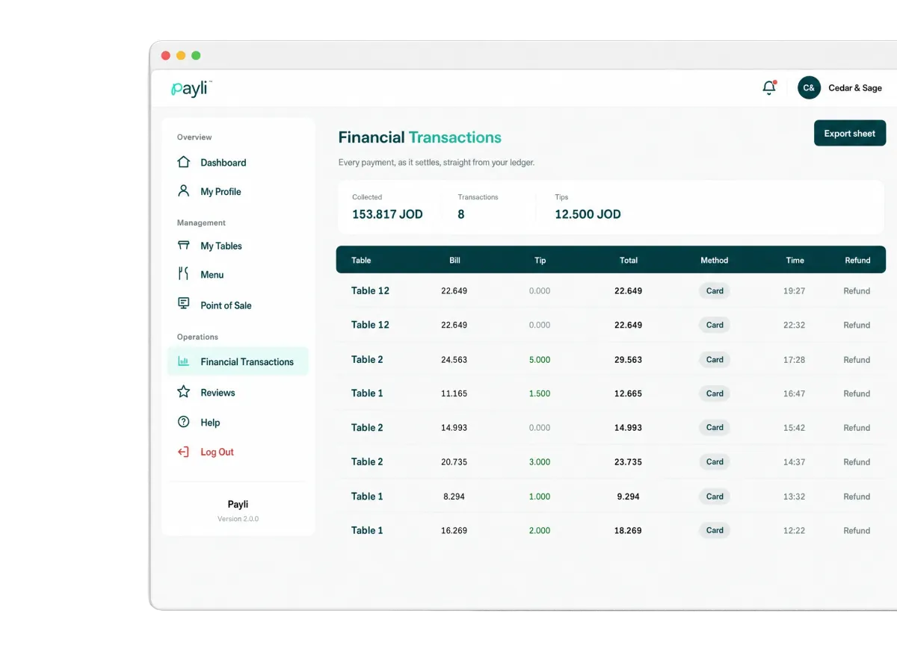

The bill comes to the table. Nobody waits for it.
Payli is pay-at-table software for restaurants in Jordan. Guests scan the QR code on the table, see the itemised bill, split it, tip and pay from their own phone. The restaurant gets a live floor, an exact record, and the sale posted back to its POS.

Fig. 01Guest phone
split view Share
JOD 22.649
of 45.298 Modes
Equal · item · custom
Payli sits between your POS and your payment provider. It carries data, never money.
Paid sale in
The sync · the floor
Card data stays here
Settles on your schedule
Where the end of a meal breaks, and what Payli changes.
The meal is over, but the table isn't free. Everyone waits on the same few steps: get the check, bring the machine, work out who owes what.
| ID | Who | Failure mode | With Payli |
|---|---|---|---|
| FM-01 | GuestsWaiting to be allowed to leave | Catching a server's eye, waiting for the check, waiting for the card machine, then doing arithmetic at the table. | They pay from their own phone the moment they're ready, and split it fairly in a few taps. |
| FM-02 | TeamBusy hands at the busiest moment | Printing checks, walking terminals across the room and splitting bills by hand while new tables are waiting. | The floor board shows which tables are paying and paid, so staff stay on the floor. |
| FM-03 | BusinessTables held, slips to reconcile | Seats stay occupied after the meal ends, and the day closes with a pile of slips to match against the bank. | Every bill, split and tip is recorded to the fils and exports as one clean file. |
Run a table from scan to settled.
Tap through the guest's phone. The restaurant's dashboard updates as it happens: the floor, the payment, the POS sync and the record.
One dashboard runs the floor, the payments and the close.
Bill open, paying now, paid: readable from two metres, with QR codes for every table.
Table, bill, tip, total, method and time. Receipts, refunds with a reason, CSV export.
A double-entry, append-only ledger exact to the fils, ready to match your provider's settlement.
Imported from your POS where the integration supports it, with Arabic item names.
The sync status of every paid bill, with a retry button.
Every rating and comment, with its table and time.

Faster tables, freer staff, numbers that close.
Every outcome comes from something the product does. Ask us to show any of them in the demo.
| ID | Outcome | Mechanism |
|---|---|---|
| O-01 | Tables free up soonerGuests pay the moment they're ready, instead of waiting for the check and the card machine. | QR → LIVE BILL → SPLIT → PAY |
| O-02 | Staff stay on the floorNo terminals walked across the room, no hand-split checks. The board shows who has paid. | M-01 LIVE FLOOR |
| O-03 | Splitting stops being a problemEvenly, by item or a custom amount. Service and tax follow the items; nobody pays twice. | PROPORTIONAL SPLIT · FILS-EXACT |
| O-04 | Tips at the right momentAsked while the service is fresh. The full tip goes to the restaurant. | PAYLI FEE ON TIPS = 0 |
| O-05 | The day closes exactEvery bill, split, tip and refund, ready to match against your provider's settlement. | M-03 LEDGER · CSV |
| O-06 | No re-keying at the tillWhen the table is fully paid, the sale goes back to your POS with items, tax, service, tip and tender. | POS CONNECTOR · IN DEVELOPMENT |
| O-07 | You hear about every tableRatings and comments arrive while the guest is still there to talk to. | M-06 RATINGS |
What are the last five minutes worth to you?
Minutes saved × seatings × tables
Freed time ÷ average seating length × busy nights
Extra seatings × average bill
An illustration built only from the numbers you enter. It is capacity, not a forecast: it turns into revenue only on nights when guests are waiting for a table. Payli has no measured results from live restaurants yet.
Payli is software. It never holds your money.
Guests pay through a licensed payment provider, and the money settles directly into your own merchant account. You stay the merchant of record.
Entered on the provider's own secure page. Payli never sees or stores the full card number or security code; 3-D Secure applies where the bank requires it.
Your team starts a refund in the dashboard; the provider returns it to the guest's original card. Payli never funds or holds a refund.
Payli invoices its own fees separately and takes no fee on tips. Your provider's card fees follow your merchant agreement.
Honest about the beta: Payli is not a bank or a licensed payment company; the provider holds the licence. Payli hasn't yet been independently audited or certified, including against PCI DSS, and doesn't claim to be.
Works alongside your POS and payment provider, and we're clear about what's ready.
| ID | System | Status | Connector |
|---|---|---|---|
| I-01 | AQUA POS | In development | Imports your menu and posts every fully paid table back as a sale with items, tax, service and tip. Sale posting is being tested on AQUA's test server. |
| I-02 | Foodics | In development | Reads the live order on each table. Staff confirm the paid order in the Foodics cashier, using Foodics' own pay-at-table flow. |
| I-03 | POSRocket | Planned | Planned together with Foodics, which acquired POSRocket. |
| I-04 | Oracle MICROS Simphony | Planned | Designed to post each fully paid table as a check with its tender and tip. |
| P-01 | Licensed payment provider (Jordan) | In testing | Hosted secure page. Visa and Mastercard; Apple Pay and Google Pay where the provider enables them. CliQ not supported. |
IN DEVELOPMENT = BEING BUILT AND TESTED AGAINST THE VENDOR'S TEST SYSTEM; NOT YET LIVE AT ANY RESTAURANT. PLANNED = NOT BUILT YET.
From a 15-minute demo to your first paid table.
We're choosing a small first group of restaurants in Amman.
- STEP 01See it on your phone
A 15-minute demo of the guest's side and yours.
- STEP 02Check the fit
We confirm your POS, payment provider and what's ready for you.
- STEP 03Set up your venue
We create your venue, connect your POS and bring in your menu.
- STEP 04A QR on every table
Add your tables and print a QR code for each one.
- STEP 05Brief the team
Floor board, receipts and refunds take minutes. Then your first tables pay.
Hardware to buy. Guests use their own phones; staff use a browser.
Payli fee on tips. The full tip goes to the restaurant.
Fees billed separately, never deducted from your payments.
No price list. Pricing depends on your venue; we walk you through it in the demo.
Answered plainly.
Bring Payli to your floor.
Book a 15-minute demo and see Payli on your own phone, with your own menu.